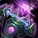
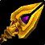
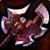
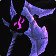
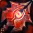

Syphon of the Nathrezim
Syphon of the NathrezimSyphon of the Nathrezim196 to 365 damage, speed 2.8, 50 attack powerProc, 1 per minute. Siphon Essence for 6 secDrops from Supremus, Black Temple
196 to 365 damage, speed 2.8, 50 attack power
Proc, 1 per minute. Siphon Essence for 6 sec
Drops from Supremus, Black Temple
Showing all 3 spec cards.
No specs are selected, so no cards are showing. Use Show every spec to bring all of them back.
Combat Rogue
Prioritynot yet decided
Constraints
Special-attack hit cap9%special
attacks
Precision-5%
Improved Faerie Fire-3%assumed
Gear needs1%
Entry set13.1%clear
by 12%
Tier set, Tier 6 shoulder and chest and
hands and legs13.3%clear by 12.2%
Dual-wields: white swings miss until 28%, which nothing in this patch
reaches, so hit past the cap still buys accuracy.
White swings stop critting at 50.5%, measured at the special-attack hit
cap.
Nothing rostered reaches it this phase, so crit stays linear all tier.
No haste threshold to protect.
Delta
Syphon of the
NathrezimSyphon of the
Nathrezim196 to 365 damage, speed 2.8, 50
attack powerProc, 1 per minute.
Siphon Essence for 6 secDrops from
Supremus, Black Temple in
Combat Rogue terms EPV
935.60
| Stat | Over Season 3
arena, Season 3
 Vengeful Gladiator's PummelerVengeful Gladiator's Pummeler30 stamina, 34 attack power, 8 hit rating, 21 crit rating, 49 armor penetration, 12 resilienceSeason 3, an arena reward bought with rating EPV 1009.94 |
Over best weapon, Hyjal Summit Blade of InfamyBlade of Infamy182 to 339 damage, speed 2.6, 28 agility, 56 attack powerDrops from Anetheron, Mount Hyjal EPV 997.48 | Over second best, Serpentshrine Cavern Talon of AzsharaTalon of Azshara182 to 339 damage, speed 2.7, 168 armor, 15 agility, 40 attack power, 20 hit rating (1.27%)Drops from Morogrim Tidewalker, Serpentshrine Cavern EPV 974.95 | Over carried into the tier, Serpentshrine Cavern Talon of AzsharaTalon of Azshara182 to 339 damage, speed 2.7, 168 armor, 15 agility, 40 attack power, 20 hit rating (1.27%)Drops from Morogrim Tidewalker, Serpentshrine Cavern EPV 974.95 | Over third best, Hyjal Summit Boundless AgonyBoundless Agony144 to 217 damage, speed 1.8, 24 crit rating (1.09%), 210 armor penetrationDrops from Azgalor, Mount Hyjal EPV 970.04 | Over fourth best, Black Temple Shard of AzzinothShard of Azzinoth161 to 242 damage, speed 1.9, 64 attack powerDrops from Illidan Stormrage, Black Temple EPV 969.80 | Over Season 2 arena, Season 2 Merciless Gladiator's SlicerMerciless Gladiator's Slicer203 to 305 damage, speed 2.6, 27 stamina, 30 attack power, 10 hit rating (0.63%), 19 crit rating (0.86%), 12 resilience EPV 947.44 | |||||||
|---|---|---|---|---|---|---|---|---|---|---|---|---|---|---|
| Change | Converted | Change | Converted | Change | Converted | Change | Converted | Change | Converted | Change | Converted | Change | Converted | |
| armor | 0 | 0 | -168 | -168 | 0 | 0 | 0 | |||||||
| agility | 0 | -28 | -28 attack power · -0.70% melee crit | -15 | -15 attack power · -0.38% melee crit | -15 | -15 attack power · -0.38% melee crit | 0 | 0 | 0 | ||||
| stamina | -30 | 0 | 0 | 0 | 0 | 0 | -27 | |||||||
| attack power | +16 | -6 | +10 | +10 | +50 | -14 | +20 | |||||||
| hit | -8 | -0.51% | 0 | -20 | -1.27% | -20 | -1.27% | 0 | 0 | -10 | -0.63% | |||
| crit | -21 | -0.95% | 0 | 0 | 0 | -24 | -1.09% | 0 | -19 | -0.86% | ||||
| armor penetration | -49 | -49 armor penetration | 0 | 0 | 0 | -210 | -210 armor penetration | 0 | 0 | |||||
| resilience | -12 | -12 resilience | 0 | 0 | 0 | 0 | 0 | -12 | -12 resilience | |||||
| Stat Highlights (Total Change) | +16 attack power -0.51% melee and ranged hit -0.95% melee crit -49 armor penetration | -34 attack power -0.70% melee crit | -5 attack power -0.38% melee crit -1.27% melee and ranged hit | -5 attack power -0.38% melee crit -1.27% melee and ranged hit | +50 attack power -1.09% melee crit -210 armor penetration | -14 attack power | +20 attack power -0.63% melee and ranged hit -0.86% melee crit | |||||||
Fury Warrior
Prioritynot yet decided
Constraints
Special-attack hit cap9%special
attacks
Improved Faerie Fire-3%assumed
Gear needs6%
The Precision talent is reachable in the Fury tree and this raid's build
does not take it.
Entry set8.8%clear
by 2.8%
Tier set, Tier 6 shoulder and
chest7.7%clear by 1.7%
Dual-wields: white swings miss until 28%, which nothing in this patch
reaches, so hit past the cap still buys accuracy.
White swings stop critting at 50.5%, measured at the special-attack hit
cap.
Nothing rostered reaches it this phase, so crit stays linear all tier.
No haste threshold to protect.
Delta
Syphon of the
NathrezimSyphon of the
Nathrezim196 to 365 damage, speed 2.8, 50
attack powerProc, 1 per minute.
Siphon Essence for 6 secDrops from
Supremus, Black Temple in
Fury Warrior terms EPV
1737.75
| Stat | Over Season 3 arena, Season 3 Vengeful Gladiator's CleaverVengeful Gladiator's Cleaver187 to 349 damage, speed 2.6, 30 stamina, 34 attack power, 8 hit rating (0.51%), 21 crit rating (0.95%), 49 armor penetration, 12 resilience EPV 1692.51 | Over second best, Tempest
Keep
 Rod of the Sun KingRod of the Sun King189 to 352 damage, speed 2.7, 52 attack powerProc, 1 per minute. Power of the Sun KingDrops from Kael'thas Sunstrider, Tempest Keep EPV 1677.54 |
Over third best, Hyjal Summit Blade of InfamyBlade of Infamy182 to 339 damage, speed 2.6, 28 agility, 56 attack powerDrops from Anetheron, Mount Hyjal EPV 1638.94 | Over fourth best, Serpentshrine Cavern Talon of AzsharaTalon of Azshara182 to 339 damage, speed 2.7, 168 armor, 15 agility, 40 attack power, 20 hit rating (1.27%)Drops from Morogrim Tidewalker, Serpentshrine Cavern EPV 1635.00 | Over Season 2
arena, Season 2
 Merciless Gladiator's CleaverMerciless Gladiator's Cleaver177 to 330 damage, speed 2.6, 27 stamina, 30 attack power, 10 hit rating (0.63%), 19 crit rating (0.86%), 12 resilience EPV 1590.13 |
Over best weapon, Tempest
Keep
 NetherbaneNetherbane175 to 327 damage, speed 2.6, 25 agility, 21 stamina, 40 attack powerDrops from Al'ar, Tempest Keep EPV 1573.20 |
||||||
|---|---|---|---|---|---|---|---|---|---|---|---|---|
| Change | Converted | Change | Converted | Change | Converted | Change | Converted | Change | Converted | Change | Converted | |
| armor | 0 | 0 | 0 | -168 | 0 | 0 | ||||||
| agility | 0 | 0 | -28 | 0 attack power · -0.85% melee crit | -15 | 0 attack power · -0.45% melee crit | 0 | -25 | 0 attack power · -0.76% melee crit | |||
| stamina | -30 | 0 | 0 | 0 | -27 | -21 | ||||||
| attack power | +16 | -2 | -6 | +10 | +20 | +10 | ||||||
| hit | -8 | -0.51% | 0 | 0 | -20 | -1.27% | -10 | -0.63% | 0 | |||
| crit | -21 | -0.95% | 0 | 0 | 0 | -19 | -0.86% | 0 | ||||
| armor penetration | -49 | -49 armor penetration | 0 | 0 | 0 | 0 | 0 | |||||
| resilience | -12 | -12 resilience | 0 | 0 | 0 | -12 | -12 resilience | 0 | ||||
| Stat Highlights (Total Change) | +16 attack power -0.51% melee and ranged hit -0.95% melee crit -49 armor penetration | -2 attack power | -6 attack power -0.85% melee crit | +10 attack power -0.45% melee crit -1.27% melee and ranged hit | +20 attack power -0.63% melee and ranged hit -0.86% melee crit | +10 attack power -0.76% melee crit | ||||||
No carried into the tier is ranked for this spec in this slot, so that
comparison is not shown. A weapon the workbook does not rank cannot be
compared against, and a spec with no captured gear set has nothing
recorded to carry in.
Enhancement Shaman
Prioritynot yet decided
Constraints
Special-attack hit cap9%special
attacks
Dual Wield Specialization-6%
Nature's Guidance-3%
Improved Faerie Fire-3%assumed
Gear needs0%
Entry set9.8%clear
by 12.9%
Talent and the assumed raid debuff cover this cap outright, so every
point of hit on an item is surplus.
Tier set, no Tier 6 piece
worn9.8%clear by 12.9%
The published guide states in its own words that neither Tier 6 set
bonus is worth chasing for this spec, and this set holds no Tier 6
piece.
Dual-wields: white swings miss until 28%, which nothing in this patch
reaches, so hit past the cap still buys accuracy.
White swings stop critting at 50.5%, measured at the special-attack hit
cap.
Nothing rostered reaches it this phase, so crit stays linear all tier.
No haste threshold to protect.
Delta
Syphon of the
NathrezimSyphon of the
Nathrezim196 to 365 damage, speed 2.8, 50
attack powerProc, 1 per minute.
Siphon Essence for 6 secDrops from
Supremus, Black Temple in
Enhancement Shaman terms EPV 781.86
| Stat | Over best weapon, Black Temple Swiftsteel BludgeonSwiftsteel Bludgeon105 to 196 damage, speed 1.5, 40 attack power, 19 hit rating (1.20%), 27 haste ratingDrops from Trash / zone drop, Black Temple EPV 854.38 | Over Season 3 arena, Season 3 Vengeful Gladiator's CleaverVengeful Gladiator's Cleaver187 to 349 damage, speed 2.6, 30 stamina, 34 attack power, 8 hit rating (0.51%), 21 crit rating (0.95%), 49 armor penetration, 12 resilience EPV 844.87 | Over second best, Black
Temple
 Rising TideRising Tide208 to 313 damage, speed 2.6, 33 stamina, 44 attack power, 21 hit rating (1.33%)Drops from High Warlord Naj'entus, Black Temple EPV 811.22 |
Over third best, Black Temple The BrutalizerThe Brutalizer128 to 193 damage, speed 1.6, 33 stamina, 21 expertise rating, 22 defense ratingDrops from Supremus, Black Temple EPV 792.86 | Over Season 2 arena, Season 2 Merciless Gladiator's CleaverMerciless Gladiator's Cleaver177 to 330 damage, speed 2.6, 27 stamina, 30 attack power, 10 hit rating (0.63%), 19 crit rating (0.86%), 12 resilience EPV 787.27 | Over fourth best, Tempest Keep Rod of the Sun KingRod of the Sun King189 to 352 damage, speed 2.7, 52 attack powerProc, 1 per minute. Power of the Sun KingDrops from Kael'thas Sunstrider, Tempest Keep EPV 783.86 | ||||||
|---|---|---|---|---|---|---|---|---|---|---|---|---|
| Change | Converted | Change | Converted | Change | Converted | Change | Converted | Change | Converted | Change | Converted | |
| stamina | 0 | -30 | -33 | -33 | -27 | 0 | ||||||
| attack power | +10 | +16 | +6 | +50 | +20 | -2 | ||||||
| hit | -19 | -1.20% | -8 | -0.51% | -21 | -1.33% | 0 | -10 | -0.63% | 0 | ||
| crit | 0 | -21 | -0.95% | 0 | 0 | -19 | -0.86% | 0 | ||||
| haste rating | -27 | -27 haste rating | 0 | 0 | 0 | 0 | 0 | |||||
| expertise rating | 0 | 0 | 0 | -21 | -21 expertise rating | 0 | 0 | |||||
| armor penetration | 0 | -49 | -49 armor penetration | 0 | 0 | 0 | 0 | |||||
| defense rating | 0 | 0 | 0 | -22 | 0 | 0 | ||||||
| resilience | 0 | -12 | -12 resilience | 0 | 0 | -12 | -12 resilience | 0 | ||||
| Stat Highlights (Total Change) | +10 attack power -1.20% melee and ranged hit -27 haste rating | +16 attack power -0.51% melee and ranged hit -0.95% melee crit -49 armor penetration | +6 attack power -1.33% melee and ranged hit | +50 attack power | +20 attack power -0.63% melee and ranged hit -0.86% melee crit | -2 attack power | ||||||
No carried into the tier is ranked for this spec in this slot, so that
comparison is not shown. A weapon the workbook does not rank cannot be
compared against, and a spec with no captured gear set has nothing
recorded to carry in.